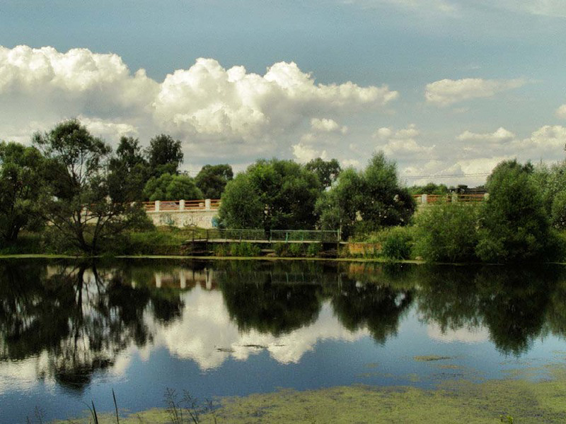

|  | Министерство культуры Российской Федерации Портал Культура.рф Проект «Образы России» |
Le musée-réserve naturel de Pouchkine (Vyazemy)
La rivière Viazemka

Un des petits affluents de Moscou-rivière de longueur de 21-23 km. La rivière a deux grandes sources– Grande et Petite Viazemka. La rivière est formé la valée bien dessinée, pratiquement tout le courant supérieur est transformé en cascade successive des étangs et réglé des barrages. La bouche se trouve au-dessus du village Ouspenskyi près du village Ggorki Х, les sources sont près du village BBoutyni.